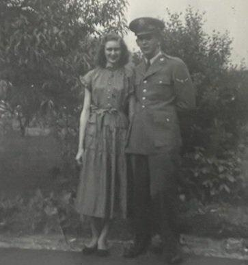
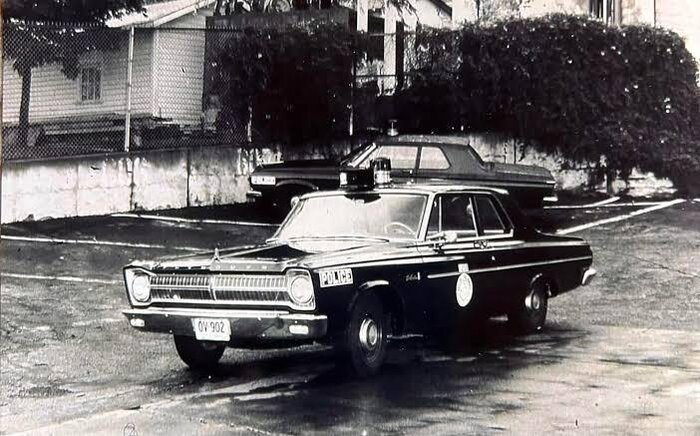
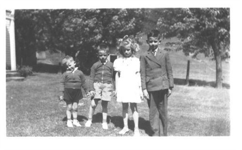
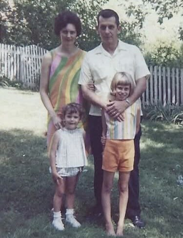

Lawrence Richard Shamblen
4 February 1932 – 2 October 1968
Quick Facts
Immediate Family
Spouse
Ruth Laverne McKinney (1932–2018)Children
Susan Ruth Shamblen (b. 25 November 1960, Cincinnati) FAMILY ACCOUNTTricia Marie Shamblen (deceased 2016) FAMILY ACCOUNT
Siblings
- Betty Carolyn Shircliff (b. 1934)
- Lowell Harold Shamblen (b. 1935)
- Clifford Earl Shamblen (b. 1938)
On Family Tree Sites
Couple Folder
Life Timeline
1932 · age 0
Born, Fairplain, Jackson Co., WV FAMILY ACCOUNT
c. 1950 · age 18
Attended Coyne Electrical Institute, Chicago, Illinois FAMILY ACCOUNT
1951–1953 · age 18–21
U.S. Air Force, 2 Jan 1951 – 16 Nov 1953; B-26 tail gunner in Korea SUPPORTED
1955 · age 23
Married Ruth Laverne McKinney, Kanawha County, West Virginia DOCUMENTED
1955–1968 · age 23–36
Probation officer, policeman, then Roadway driver, Cincinnati, Ohio FAMILY ACCOUNT
1968 · age 36
Killed in a truck crash, Pennsylvania Turnpike near Mt. Pleasant, PA FAMILY ACCOUNT
1968 · age 36
Buried 5 Oct 1968, Spring Grove Cemetery, Cincinnati DOCUMENTED
Life Story
Lawrence Richard Shamblen was born February 4, 1932, in Fairplain, Jackson County, West Virginia, the oldest boy of the family. His father, Arvel Lawrence Shamblin, was a carpenter and DuPont millwright; his mother, Georgia Mae Fisher, kept the family at Calvary Baptist Church every Sunday.
He met Ruth Laverne McKinney at a Baptist youth camp on Tyler Mountain, West Virginia. After a try at Coyne Electrical Institute in Chicago, he joined the Air Force during the Korean War and flew as a tail gunner on a B-26 bomber. His plane was hit by anti-aircraft fire and crash-landed; he was hurt but recovered.
Richard and Ruth married in 1955 and made their home in Cincinnati, where he worked as a probation officer, then a policeman, and finally a long-haul driver for Roadway.
On October 2, 1968, on the Pennsylvania Turnpike near Mt. Pleasant, his co-driver fell asleep and the truck went off the road while Richard slept in the berth. He was thirty-six. He was buried at Spring Grove Cemetery in Cincinnati on October 5, 1968.
More of Richard's story is in the couple profile. It will be added here once the family members who shared it approve it.
Photo Gallery






Sources and Evidence
- Spring Grove Cemetery burial card: Lawrence Richard Shamblen, son of Arvil Shamblen and Georgia Fisher; Ruth Shamblen lot owner; burial 5 Oct 1968 DOCUMENTED
- Benefit claim for deceased veteran: Air Force service 2 Jan 1951 – 16 Nov 1953 SUPPORTED
- Couple profile, Lawrence Richard Shamblen × Ruth Laverne McKinney (family accounts, including a family memoir) FAMILY ACCOUNT
- Kanawha County marriage register, pp. 306–307: Lawrence Richard Shamblen × Ruth Laverne McKinney, 1955 (public document on Geni) DOCUMENTED
- Death date: BIRLS Death File gives 2 Oct 1968; the Pennsylvania Death Index gives 3 Oct 1968, noted here only as the conflicting source SUPPORTED
Grades: DOCUMENTED an original record says it · SUPPORTED several records point to it · FAMILY ACCOUNT the family's own telling · UNPROVED a lead, not proved.
Research Notes and Open Questions
- Find the 1968 Pennsylvania death certificate and a newspaper report of the turnpike crash.
- Request his Air Force personnel file (NPRC) for Korea missions.
DNA
No DNA matches linked yet.
Family Notes
Have a story, photo, correction or record? Leave a note in Richard's Family Notes doc. We check each note and update this profile.
Profile history: Created 2 November 2026 from the family couple profile and research notes.